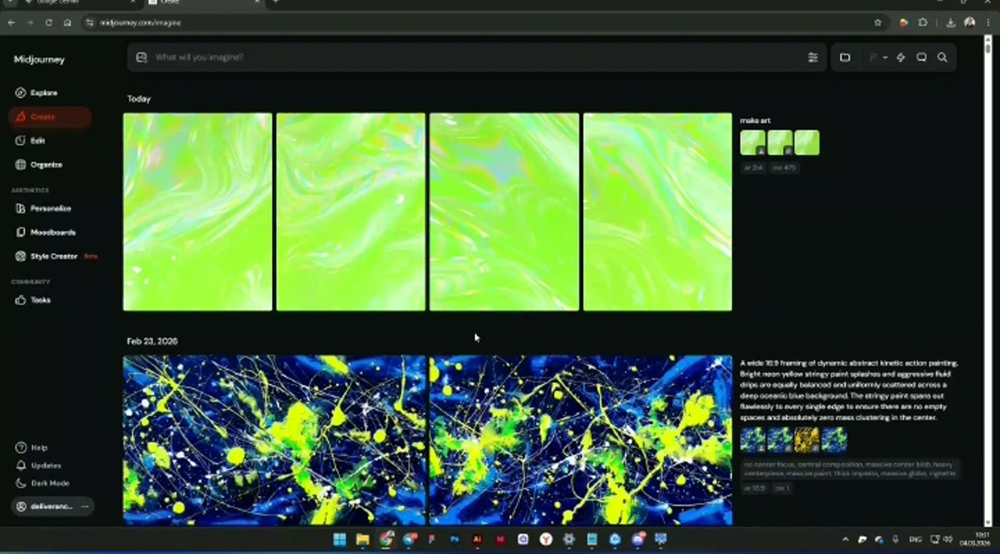
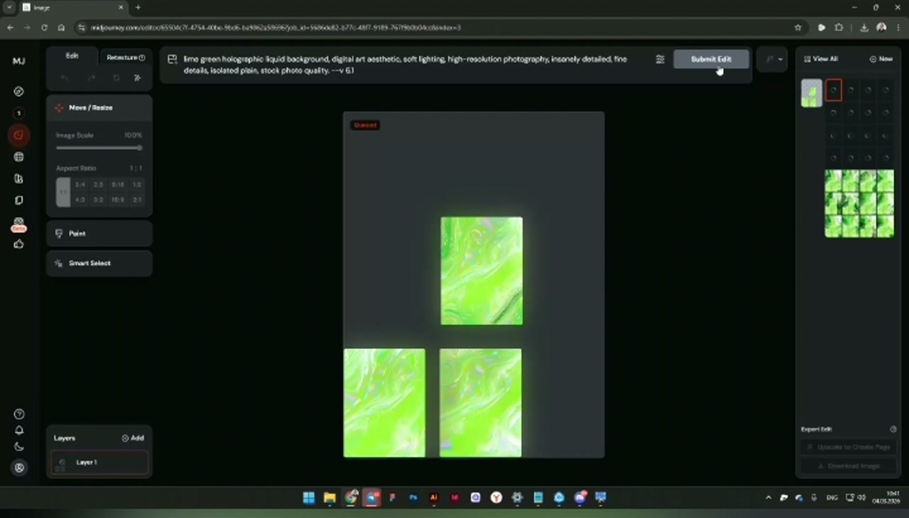
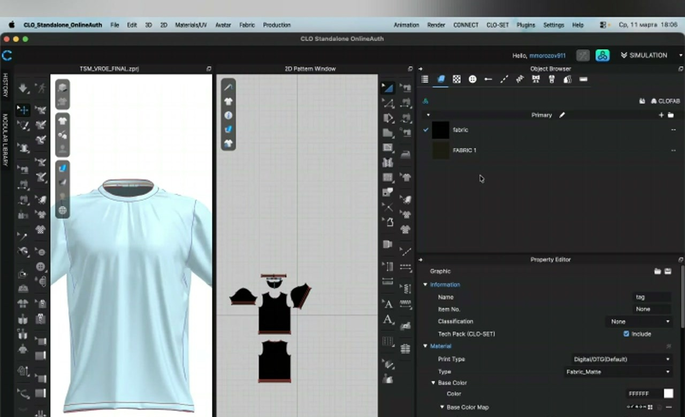
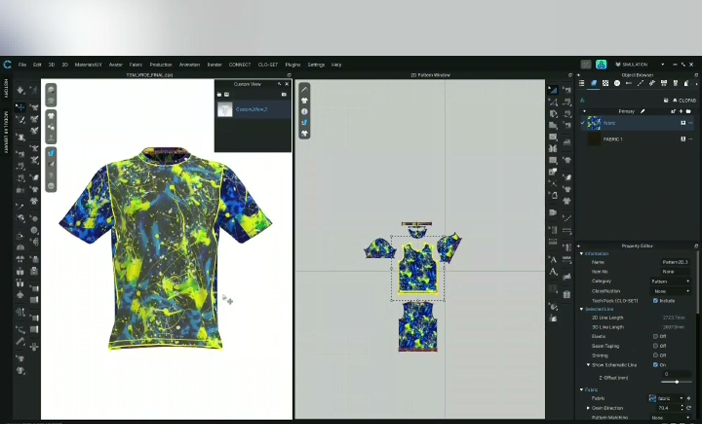
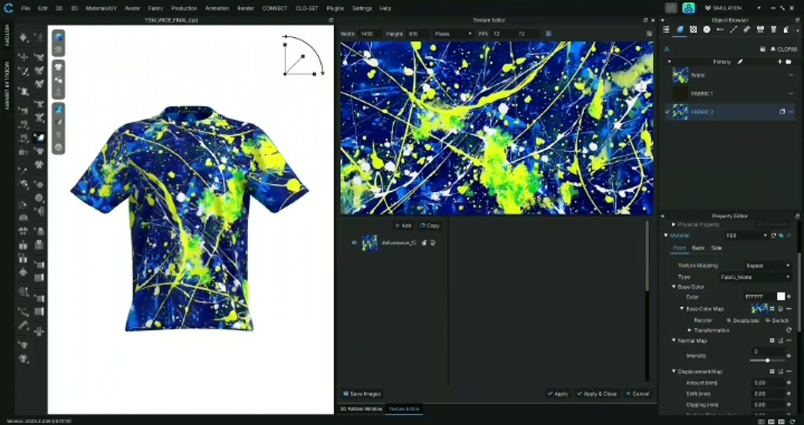
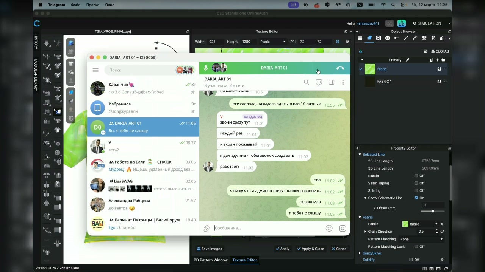
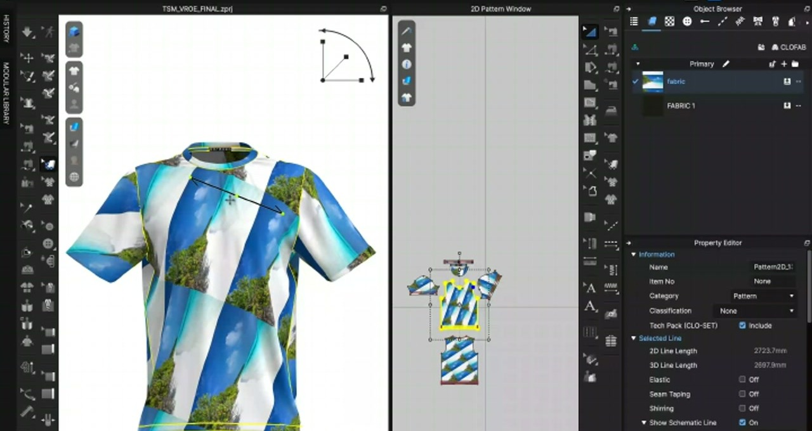

Полная Инструкция
AI-оператор ПК / операционный ассистент
Первый дизайн-этап, Midjourney, CLO 3D, отчётность, ручное освоение процессов и постепенная автоматизация
🎧 Аудио версия инструкции
Если удобнее слушать, здесь оставлены две аудио-версии руководства. Текстовая V7 ниже обновлена точнее, поэтому при расхождениях ориентируйтесь на текст.
1О компании и роли
Здравствуйте! Мы Amazon-агентство: помогаем брендам решать операционные, AI дизайн и аналитические задачи на зарубежных рынках.
Сейчас ищем не классического дизайнера, а ответственного AI-оператора ПК / операционного ассистента творческих задач. Нам важнее не портфолио, а пунктуальность, скорость, внимательность, уверенная работа за компьютером и готовность точно выполнять инструкции.
✅ Главный принцип работы
Сначала вы вручную осваиваете процессы по нашим инструкциям, мы обучаем всему с нуля, а затем вы постепенно учитесь автоматизировать эти процессы через Vibe Coding, AI-агентов, n8n и другие инструменты.
Первый рабочий этап — дизайн-процесс. В первые недели и первый месяц основной поток задач будет связан с Midjourney, CLO 3D, скриншотами, файлами и визуальными вариантами для all-over print sublimation мужских футболок. Это нужно, чтобы вы руками поняли процесс, научились видеть правила и только потом могли помогать улучшать и автоматизировать его.
Это ассистентская и операционная позиция на стыке порядка, AI-инструментов и творчества:
- На старте: генерация вариантов в Midjourney, наложение на футболки в CLO 3D, скриншоты, организация файлов и точное повторение инструкций.
- После освоения: таблицы, отчёты, Amazon-процессы, анализ изображений, улучшение инструкций и постепенная автоматизация повторяющихся действий.
2Принцип, требования и график
- Полная занятость: 40 часов в неделю. Совмещать с другой работой или очной учёбой будет сложно.
- Ранний старт: идеально около 5:00 утра по МСК. Укажите Ваш точный график.
- Мощный ПК: компьютер должен стабильно тянуть CLO 3D + стабильный интернет.
- Внимательность: умение делать задачи строго по правилам и изначальному ТЗ.
- Google Sheets / Excel: нужно уверенно работать с таблицами, отчётами, файлами и структурой данных.
- Английский: промпты на английском — на старте мы дадим шаблоны. Со временем нужно будет разбираться в промптах самостоятельно и понимать письменный английский на базовом уровне.
- AI и автоматизация: опыт с ChatGPT, Claude, Codex, Antigravity, n8n, Vibe Coding или кодингом будет плюсом, но главное — быстро учиться и применять инструкции.
- Главное качество: способность быстро понимать инструкции и чётко следовать заданиям с первого слова. Нажмите сюда, скопируйте это, откройте два окна — вы должны делать это быстро и точно.
⚠️ О перерывах и паузах
Вы обязательно должны делать перерывы в течение дня. Кушать, отдыхать, отходить — это нормально и нужно. Просто пишите /out когда уходите на паузу и /in когда возвращаетесь. Вы можете разбить 8 часов на весь день как Вам удобно. Единственное правило — набрать 40 часов в неделю.
3Установка программного обеспечения
До тестового созвона у Вас ОБЯЗАТЕЛЬНО должны быть установлены:
| Программа | Зачем нужна | Примечание |
|---|---|---|
| CLO 3D | Наложение дизайнов на 3D-модель футболки | Обязательно до тестового созвона |
| Adobe Photoshop | Базовая обработка графики, ластик, обрезка | Желательно |
| Adobe Illustrator | Работа с векторами при необходимости | Желательно |
| Telegram Desktop | Вся коммуникация, трекинг времени, файлы | Обязательно |
| Google Sheets / Excel | Отчёты, таблицы, документация, контроль задач | Обязательно |
| Chrome / браузер | Работа с Amazon, AI-инструментами, файлами и инструкциями | Обязательно |
| ChatGPT / Claude / Codex / Antigravity / n8n | AI-помощники, Vibe Coding и автоматизация повторяющихся процессов | Плюс, будем развивать постепенно |
🔗 Ссылки для скачивания CLO 3D (и других программ):
- Для macOS: appstorrent.ru/491-clo.html
- Для Windows: pcprogs.net/1639-clo.html
На этих же сайтах можно найти Photoshop и Illustrator.
Что мы предоставляем:
- Платный аккаунт Midjourney (логин и пароль через Discord выдаём при приёме).
- Готовые исходные файлы CLO 3D (.zprj) с 3D-моделью футболки.
- Промпт-шаблоны для генерации дизайнов.
- Инструкции, примеры, таблицы и рабочие файлы для первого этапа.
4Первый тестовый созвон (1 час)
Формат: менеджер будет давать Вам задачи в режиме реального времени со screenshare (показ Вашего экрана).
🔴 ОБЯЗАТЕЛЬНЫЕ УСЛОВИЯ для созвона:
1. Программа CLO 3D уже установлена и запускается.
2. Вы готовы показать экран (screenshare). Камеру включать НЕ нужно.
3. Вы указали точное время и день, когда готовы к созвону.
⚠️ Важно об оплате тестового часа
Тестовый час оплачивается только в случае продолжения работы.
Зачем нужна часовая встреча и показ экрана?
Самое главное — это ваша способность быстро понимать и чётко следовать инструкциям. Например: «нажмите сюда», «скопируйте это», «откройте два окна рядом», «перетащите файл». Вы должны делать это быстро и точно.
Самый плохой результат для нас — когда нам приходится повторять одно и то же несколько раз. Самое главное — чтобы вы понимали нас с первого слова. А всему остальному мы вас научим, не переживайте!
На тесте мы смотрим не на профессиональный дизайн, а на скорость работы за компьютером, внимательность, реакцию на инструкции, умение показывать процесс и задавать точные вопросы.
📞 Как проходят звонки
Обычно все созвоны проходят в Telegram — мы создадим Вам рабочую группу, и там же Вы будете в звонке с показом экрана.
Однако если Вы находитесь в России — звонки через Telegram могут работать нестабильно. В этом случае, пожалуйста, заранее создайте Яндекс Телемост (telemost.yandex.ru) и пришлите ссылку менеджеру. Тестовый созвон проведём через Яндекс. Вся остальная работа (переписка, файлы, трекинг времени) всё равно ведётся только в Telegram.
5Рабочий процесс: от начала до конца
🧩 Первый этап: делаем руками, потом автоматизируем
Первые недели вы проходите дизайн-процесс вручную: Midjourney → Edit → CLO 3D → скриншоты → файлы → обратная связь. Это не случайная рутина, а база: сначала нужно понять процесс руками, а затем постепенно искать, что можно ускорить, стандартизировать и автоматизировать через AI-инструменты, Vibe Coding и n8n.
Начало рабочего дня
Напишите /in в рабочем чате Telegram — таймер начинает считать время.
Менеджер даёт Вам исходное изображение или промпт-задание + файл CLO 3D (.zprj).
Основной цикл работы (повторяется весь день)
Генерация в Midjourney (Create) → создание вариантов дизайнов по промптам, подбор «центра» (середины) для туловища футболки.
Редактирование в Midjourney (Edit) → доработка выбранного центра: убираем белые линии, расширяем область через несколько слоёв.
Наложение в CLO 3D → скачиваем готовую текстуру, загружаем в CLO 3D, проверяем на 3D-модели.
Скриншот + отправка → делаем скриншот полного экрана CLO 3D, отправляем в чат вместе с файлом .zprj.
Повтор → повторяем с разными вариациями. Цель — минимум 10 финальных версий одного дизайна за 8-часовой день.
✅ Дневная норма (ориентир)
1 дизайн = 8 часов = минимум 10 финальных версий (скриншоты + .zprj файлы). По мере набора опыта — за 4 часа.
Вот как выглядит рабочий процесс на практике (кадры из реального обучения):






6Midjourney: полное руководство
6.1 Доступ
Мы выдадим Вам логин и пароль Discord-аккаунта с платной подпиской Midjourney. Работа ведётся через веб-интерфейс (midjourney.com).
6.2 Режим Create (Генерация)
- Лимит: максимум 10 изображений за раз. Следите за очередью, делайте refresh.
- Fast vs Relax: используйте Fast для приоритетных задач (Edit), Relax для массовых генераций. Менеджер скажет, когда переключаться.
- Выбор лучших: ставьте лайки (эмодзи) в Telegram на свои лучшие варианты, ТОП-3 отмечайте отдельно.
- Zoom 2x: попробуйте увеличение на понравившихся вариантах — иногда это значительно улучшает результат для центра.
- More Options: нажмите на фотографию → More Options → поставьте галочки на всём.
6.3 Режим Edit (Редактирование)
- Расстояние между элементами: оставляйте минимум 3-4 квадратика пустого пространства. Midjourney заполнит пустые места.
- Промпт для Edit: откройте новый Edit, загрузите один файл, нажмите ⭐, скопируйте промпт и используйте в основном Edit.
- Не используйте ⭐ с несколькими слоями! Звёздочка — только когда один файл.
- Не прикасайтесь к краям! Середину делайте побольше.
- Белые линии: уберите ластиком или обрежьте вокруг.
- Закруглённые края: скачивайте изображение и загружайте файлом (drag & drop).
6.4 Промпты
- Все промпты на английском. Шаблон: "abstract all-over print sublimation men t-shirt pattern".
- Удачный вариант → Rerun 20-30 раз для вариаций.
- Используйте Remix и Variation на лучших результатах.
7CLO 3D: работа с проектами
7.1 Открытие проекта
Менеджер отправит файл .zprj в Telegram. Скачайте и откройте в CLO 3D.
7.2 Наложение текстуры
- Скачайте изображение из Midjourney (Download в Edit).
- Перетащите на нужный слой (туловище, рукав и т.д.).
- Проверьте результат на 3D-модели.
7.3 Результат: дизайн на 3D-модели

7.4 Слои
| Часть | Действия |
|---|---|
| Туловище | Основной слой. Сначала подбираем центр и текстуру. |
| Рукава | Отдельный слой: 2D-окно рукава → Assign to New Layer. Не отсоединяйте слои без менеджера! |
| Back Yoke | Если серая — проверьте, что текстура назначена. |
| Горловина | Отдельно подбирается направление энергии. |
🔴 ВАЖНО: Слои
НЕ разъединяйте слои без менеджера! Работу со слоями делаем только вместе по screenshare.
7.5 Сохранение и отправка файлов
- Сохранение: File → Save Project (без "All Files" — быстрее и меньше).
- Ежедневно:
.zprjфайлы. ZIP — только для финала. - Именование: имя в CLO 3D НЕ меняет имя файла на диске!
- Компьютер — всегда на зарядке!
8Дизайн-принципы (ТЗ)
8.1. Три золотых правила дизайна
📐 Правило 1: МАСШТАБ (количество сюжетов)
На футболке должно быть достаточное количество визуальных «сюжетов». Если менеджер сказал сделать 8 сюжетов — делайте ровно 8, не 2 и не 3!
⚖️ Правило 2: БАЛАНС
Все «сюжеты» равномерно распределены по туловищу. Левая и правая стороны уравновешены.
🔥 Правило 3: ЭНЕРГИЯ
Невидимое направление движения рисунка. Представьте, что дизайн — это река: все элементы на рукавах, туловище, горловине текут в одном направлении. Это создаёт ощущение единого, живого дизайна.
⚠️ Правила не отменяют друг друга!
Эти 3 правила действуют всегда. Дополнительные правила, которые даются ежедневно, не отменяют старые, если менеджер чётко не указал на это. Все правила копятся и действуют одновременно.
8.2. Рукава: плавные переходы (стыки)
- Приоритет стыков: в первую очередь подбирайте текстуру на стыках (рукав ↔ туловище).
- Плавный переход цвета: оттенки должны плавно переходить, без резких границ.
- Направление энергии: все части футболки — единое направление «потока» дизайна.
- Без рапорта: нигде не должно быть заметного повторяющегося паттерна.
8.3. Артефакты
«Артефакт» — любая визуальная ошибка: белая линия, квадратная форма, закруглённые углы, пиксельные блоки. Замечайте и устраняйте.
8.4. Цвет
- Не кислотный, не токсичный — цвета приближены к «правде».
- Не бледный — но и не чрезмерно яркий.
- Всегда проверяйте цвет на 3D-модели в CLO 3D (2D и 3D сильно отличаются!).
9Отчётность, скриншоты и файлы
📸 ГЛАВНОЕ ПРАВИЛО: Всегда скриншоты!
Присылайте как можно больше скриншотов. Есть 2 типа:
🖥️ Скриншоты процесса (генерация, работа, вопросы) — всегда ПОЛНЫЙ ЭКРАН, чтобы менеджер видел весь контекст.
👕 Скриншоты готовой футболки из CLO 3D — только сама футболка, без лишнего. Файл .zprj отправляйте отдельно через Reply.
Как Вы должны работать (пример из реального процесса)
Правила скриншотов
- Полный экран — всегда ПОЛНЫЙ экран, не обрезанный кусок.
- Обводите выбранное: кружком или выделением.
- Показывайте промпт: чтобы видно, из какого промпта получился результат.
- ТОП-3: отметьте эмодзи 3 лучших варианта в Telegram.
- К каждому .zprj — скриншот: через Reply, чтобы видно что внутри.
Трекинг времени
| Команда | Когда писать |
|---|---|
/in | Начало работы / возвращение с перерыва |
/out | Уход на перерыв / конец рабочего дня |
10Оплата и заработок 💰
💵 Базовая ставка
Оклад: 30 000 ₽/месяц при 40 часах в неделю = ~175 ₽/час
📊 Сколько можно заработать?
| Режим | Часов/нед | Часов/мес | База | Бонус | Итого |
|---|---|---|---|---|---|
| Стандарт | 40 | ~160 | 30 000 ₽ | до 8 000 ₽ | до 38 000 ₽ |
| Максимум | 80 | ~320 | 56 000 ₽ | ~15 000 ₽ | до 71 000 ₽ 🔥 |
🔥 Как получить 71 000 ₽ в месяц?
Многие наши дизайнеры работают по 80 часов в неделю, потому что работа рутинная и ненапряжная. Расчёт простой:
175 ₽/час × 80 часов × 4 недели = 56 000 ₽ база
+ бонус за скорость и качество ≈ 15 000 ₽
= 71 000 ₽ в месяц 🎉
Уже в первый месяц вы можете получить эту сумму, если будете стараться и работать много!
💳 Порядок выплат
- На старте: оплата день в день — если вы обещаете прийти и работать дальше.
- После адаптации: переход на выплаты раз в 2 недели.
- Способ: переводы на карту РФ (Тинькофф, Сбербанк и т.д.).
🎯 Бонусы
- От 5% до 50% от базовой ставки за точное соблюдение ТЗ, скорость, аккуратность и стабильный результат.
- Особенно ценится скорость работы — чем быстрее и качественнее, тем выше бонус.
📈 Рост ставки
Повышение базовой ставки возможно после успешной адаптации и стабильной работы. Обычно первые решения о росте обсуждаются через 3-6 месяцев по результатам скорости, точности, самостоятельности и качества.
🌅День из жизни AI-оператора на первом дизайн-этапе
Типичный рабочий день на стартовом дизайн-процессе выглядит так (часовой пояс МСК):
Пишете /in в Telegram. Открываете CLO 3D и Midjourney.
Менеджер даёт задание: промпт + .zprj файл + референс.
Генерация в Midjourney (Create) — 20-30 вариантов. Выбираете ТОП-5 центров.
Edit в Midjourney — расширение лучших центров, убираете артефакты.
☕ Перерыв! Пишете /out. Завтрак, кофе, отдых.
Пишете /in. Возвращаетесь к работе.
Наложение текстур в CLO 3D. Скриншоты каждого варианта в чат.
🍽 Обед. /out.
/in. Доработка по фидбеку менеджера. Ещё 5-7 вариаций.
Финальные скриншоты, отметка ТОП-3, отправка .zprj файлов.
Пишете /out. Рабочий день завершён! 🎉 Итого ~8 часов.
💡 Гибкий график
Вы можете разбить 8 часов на весь день как удобно. Главное — набирать 40 часов в неделю и быть на связи в рабочее время.
✅Чеклист первого дня
Пройдите все пункты по порядку в первые 2 часа работы:
- Напишите
/inв рабочий чат
Таймер начинает считать ваше время. - Откройте CLO 3D и загрузите тестовый .zprj файл
Убедитесь, что программа работает и модель отображается. - Войдите в Midjourney через выданный Discord-аккаунт
Проверьте: midjourney.com → Create → введите тестовый промпт. - Сделайте первый скриншот и отправьте в чат
Полный экран CLO 3D с открытым проектом. - Сгенерируйте 4-5 вариантов по промпту менеджера
Скриншоты всех вариантов → в чат → отметьте лучший. - Наложите лучший вариант на 3D-модель
Скачайте из Midjourney → перетащите в CLO 3D → скриншот. - Сохраните .zprj и отправьте в чат через Reply
Reply на скриншот, чтобы было видно что внутри файла. - Спросите менеджера: «Всё верно? Продолжать?»
Первый день — задавайте как можно больше вопросов!
🤝 Чего мы НЕ ожидаем от вас в первый день
• Не нужно быть профессиональным дизайнером — мы всему научим
• Не нужно знать промпты наизусть — мы дадим шаблоны
• Не нужно делать «идеально» — важна скорость и количество вариантов
• Не нужно стесняться задавать вопросы — это приветствуется!
• Не нужно работать без перерывов — отдых обязателен
⚖️Хорошо vs Плохо: визуальное сравнение
Используйте это как быстрый чеклист при оценке своих дизайнов:
14.1. Масштаб и композиция
- Много «сюжетов» равномерно по футболке
- Нет больших пустых однотонных зон
- Баланс — левая и правая стороны уравновешены
- Центр дизайна читается с расстояния 2м
- Один крупный элемент и много пустого места
- Все «сюжеты» скопились в одном углу
- Дисбаланс — одна сторона тяжелее другой
- Дизайн «размытый» и не привлекает взгляд
14.2. Стыки и переходы
- Плавный переход цвета рукав → туловище
- Единое «направление энергии» по всем частям
- На стыках нет резких полос и артефактов
- Рисунок «перетекает» с одной части на другую
- Видна чёткая линия между рукавом и туловищем
- Цвет рукава и туловища не совпадает
- Белые линии на стыках
- Заметный повтор паттерна (рапорт)
14.3. Цвет и качество
- Естественные, «настоящие» цвета
- Насыщенный, но не кричащий
- Выглядит дорого и качественно на 3D-модели
- Нет пиксельных артефактов
- «Кислотные», ненатуральные цвета
- Слишком бледный или слишком яркий
- Видны квадратные блоки, белые линии
- Закруглённые углы от Midjourney не убраны
⚠️Типичные ошибки новичков и как их исправить
| Ошибка | Почему это плохо | Как исправить |
|---|---|---|
| Белые линии на стыках | Видны на распечатке, выглядит дёшево | Уберите ластиком в Edit или обрежьте вокруг |
| Закруглённые углы | Midjourney добавляет автоматически | Скачайте файлом и загрузите через drag & drop |
| Кислотный цвет | Не продаётся, выглядит ненатурально | Проверьте на 3D-модели, 2D ≠ 3D результат! |
| Использование ⭐ с несколькими слоями | Ломает промпт, плохой результат | ⭐ только с одним файлом в Edit |
| Мало вариантов (2-3 за день) | Не хватает для выбора лучшего | Цель: минимум 10 финальных версий за 8ч |
| Обрезанные скриншоты | Менеджер не видит контекст | Всегда ПОЛНЫЙ экран + обведите выбранное |
Забыли /in или /out | Время не считается, оплата неверная | Привычка: первое и последнее действие дня |
| Разъединили слои сами | Можно сломать весь проект | Слои — ТОЛЬКО с менеджером по screenshare |
| Рапорт заметен | Повтор паттерна виден покупателю | Увеличьте вариативность, используйте Remix |
| Не сохранили .zprj перед закрытием | Потеря всей работы | File → Save Project после каждого варианта |
📖Глоссарий терминов
Нажмите на термин, чтобы увидеть определение:
❓Частые вопросы (FAQ) — 18 вопросов
| Вопрос | Ответ |
|---|---|
| Зачем показывать экран? | Проверка скорости и смекалки + работа часто проходит со screenshare. Камеру НЕ нужно. |
| Можно ли делать перерывы? | Обязательно! Пишите /out и /in. Главное — честно фиксировать рабочее время и набирать согласованное количество часов. |
| Почему первое задание связано с дизайнами? | Это стартовый учебно-рабочий процесс на первые недели и первый месяц. Через Midjourney, CLO 3D, скриншоты и файлы вы руками понимаете правила, скорость, структуру и отчётность. Потом этот опыт помогает улучшать и автоматизировать процесс. |
| Сколько дизайнов в день? | На стартовом дизайн-этапе ориентир: 1 дизайн = 1 рабочий день. Минимум 10 финальных версий, скриншоты и .zprj файлы. |
| Что если кредиты Fast закончились? | Переключитесь на Relax. Скажите менеджеру — при необходимости докупим. |
| Как предугадать 2D → 3D? | Никак. Работа наугад — поэтому важно количество. Не тратьте время на «идеальную» 2D-картинку. |
| Когда выбирается финальный дизайн? | Обычно на следующий день — «глаз замыливается». |
| Сколько конкретно я буду получать? | Оклад 30 000 ₽/мес при 40ч/нед = ~175 ₽/час. Можно работать до 80ч/нед и получать до 71 000 ₽/мес с бонусами (см. раздел «Оплата»). |
| Что если я не справлюсь за тестовый час? | Тестовый час оплачивается только при продолжении работы. Мы смотрим на скорость обучения и способность чётко следовать инструкциям, а не на идеальный результат. |
| Как выглядит обратная связь? | Менеджер пишет в чат: что хорошо, что исправить. Часто — голосовыми сообщениями с пометками на ваших скриншотах. Всё дружелюбно и конструктивно. |
| Насколько строго 5:00 утра? | Это идеал. Если вы можете с 6:00 или 7:00 — обсуждаемо. Главное — указать точный график и соблюдать его. Часы можно разбить на блоки. |
| Минимальные требования к ПК? | RAM: 8GB (лучше 16GB). Видеокарта: любая дискретная. Процессор: Intel i5 / Ryzen 5 или выше. SSD обязателен. Стабильный интернет от 10 Мбит/с. |
| Есть ли выходные? Какие дни работы? | График обсуждается, но нужна полноценная занятость от 40 часов в неделю и стабильное раннее начало по МСК. |
| Как часто нужно давать апдейты? | Минимум каждые 10 минут — самостоятельно отправляйте скриншоты прогресса. Каждые пару минут — ещё лучше! Один дизайн можно наложить за минуту, поэтому скриншоты должны лететь часто. |
| Будут ли задачи кроме футболок? | Да. Первый этап — дизайн-процесс, но дальше могут быть таблицы, отчёты, Amazon-задачи, анализ изображений, документация, AI-инструменты и автоматизация. |
| Когда начинается автоматизация? | Не в первый день. Сначала вы учитесь делать процесс вручную, понимаете правила и типовые ошибки. После этого можно постепенно переносить повторяющиеся части в Vibe Coding, AI-агентов, n8n и другие инструменты. |
| Нужно ли уметь программировать? | Нет, это не обязательное требование. Но опыт кодинга, Codex, Claude, Antigravity, n8n или автоматизации процессов будет большим плюсом. |
| Кто ещё в команде? | Менеджер + несколько AI-операторов / ассистентов. Вы общаетесь в основном с менеджером в личном рабочем чате. |
| Как происходит уход? | Если вы приняты и работаете — мы рассчитываем на вас. Предупредите минимум за 1-3 месяца, чтобы мы нашли замену и вы помогли обучить нового человека. Это серьёзная позиция, не подработка. |
🚀 Готовы начать или есть вопросы? Пишите нашему менеджеру в Telegram:
@artofuture